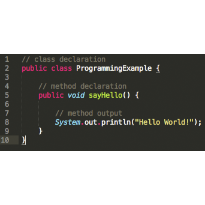
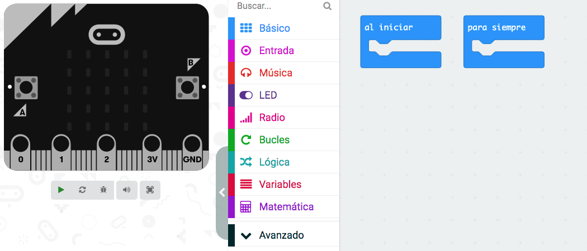

Acrónimo de light-emitting diode (diodo emisor de luz). Es una fuente de luz de bajo consumo y muy duradera.
Ejemplo:
El teléfono móvil lleva una luz LED para iluminar.
Lenguaje de programación

Definición:
Es un lenguaje que permite realizar un programa para introducir instrucciones en una máquina informática.
Ejemplo:
Hay lenguajes de programación mediante bloques y escritos.
Ha llegado el momento de intentar despertar a nuestro robot y comprobar que todavía sigue con vida después del accidente.
Es lo que en programación se llama ¡Hola, Mundo!
Para ello tendremos que aprender a programar nuestra placa.
¡Verás que divertido es programar!
1. ¡Hola, Mundo! en el simulador
Vamos a hacer nuestro primer programa para dar vida a nuestra placa en el simulador. Prueba a hacer tu primer programa y reprodúcelo en el simulador.
Lumen dice ¿Necesitas ayuda para realizar el ¡Hola Mundo! en el simulador?
Para realizar el ¡Hola Mundo! en el simulador realiza los siguientes pasos:
1- Abre el entorno de programación
Abre el programa MakeCode para microbit y dale a nuevo proyecto. Verás la siguiente pantalla.

2- Localiza los bloques
Localiza los bloques que vas a utilizar. En el menú Básico puedes encontrar todos los bloques que necesitas para realizarlo.
3- Programa
Arrastra los bloques a la zona de programación y únelos.
4- Simula y comprueba
En el simulador dale al play y verás lo que has programado. Comprueba que el programa funciona como querías. Si no es así cambia el programa y vuelve a comprobarlo.
Se llama así porque consiste en escribir por la pantalla: ¡Hola, Mundo!
Sirve para comprobar que el entorno de programación funciona correctamente así como para introducirnos en el lenguaje de programación.
En robótica el ¡Hola, Mundo! nos permite comprobar además que el programa se carga en el microcontrolador y suele consistir en encender y apagar un LED de forma intermitente.
En nuestro caso, al disponer de una matriz de LEDs, ¡podemos escribir el mensaje que queramos!
Definición:
Es un lenguaje que permite realizar un programa para introducir instrucciones en una máquina informática.
Ejemplo:
Hay lenguajes de programación mediante bloques y escritos.
Definición:
Acrónimo de light-emitting diode (diodo emisor de luz). Es una fuente de luz de bajo consumo y muy duradera.
Ejemplo:
El teléfono móvil lleva una luz LED para iluminar.
Lectura facilitada
El ¡Hola, Mundo!
Es el primer programa que se hace en un lenguaje de programación.
Se llama así porque se escribe por la pantalla: ¡Hola, Mundo!
Sirve para saber que el entorno de programación funciona bien y empezar a programar.
Nos ayuda a saber que el programa se carga en el microcontrolador.
Para saber que se carga el programa se enciende y apagar un LED de forma intermitente
Este es un ejemplo de “¡Hola, Mundo!”:
Definición:
Es una fuente de luz de bajo consumo y que dura mucho sin estropearse.
Ejemplo:
El teléfono móvil lleva una luz LED para iluminar.
3. ¡Hola Mundo!
Vamos a intentar despertar a nuestro robot. ¿Qué te gustaría que dijera? Realiza el programa y cárgalo en la placa.
Lumen dice ¿Has podido cargar el programa en la placa?
Tenemos dos métodos:
Sincronización
Carga manual
Conecta tu Micro:bit a tu computadora con el cable USB.
Haz click en Descargar para guardar el archivo .hex en tu computadora.
Mueve el archivo .hex de tu computadora al dispositivo Micro:bit.
Aquí tienes un vídeo con cómo realizar el proceso de carga (tiene subtítulos en español).
¿Tienes una tablet?
¿Sabes cómo conectarla? ¿Sabías que Micro:bit también se puede conectar a tu tablet? En el siguiente video nos explican cómo hacerlo.
Motus dice ¿Crees que tus compañeros y compañeras están emocionados con esta actividad?
Cuando estabais haciendo esta actividad, ¿cómo se estaban sintiendo?
Puede que algunos compañeros o compañeras se hayan sentido inseguros o tensas para hacer la actividad. Seguro que alguien ha tranquilizado al equipo y ha ayudado a hacerla.
Es posible que alguien estuviese enfadado o enfadada, quizás porque no sabía cómo hacerla.
Cuando trabajamos en podemos tener diferentes sensaciones al hacer una actividad. Conocerlas y comprenderlas nos ayudará a hacer la tarea con éxito. Para ello sigue estos consejos en las próximas actividades en equipo:
Piensa en cómo te estás sintiendo tú.
Observa y pregunta a tus compañeros para saber cómo se sienten.
4. Reviso lo aprendido
¡Cuánto has aprendido hasta llegar aquí! Todo lo que aprendes te ayuda para conseguir las metas que te propones.
Reflexiona un momento sobre todo lo que has aprendido hasta llegar aquí. Y completa el PASO 3 de tu Diario de Aprendizaje (Reviso lo aprendido)
Recuerda:
Pregunta a tu profesor o profesora si la rellenarás en papel o en el ordenador.
Si la rellenas en el ordenador, ¡no te olvides de guardarla en tu ordenador cuando la termines!
 Ha llegado el momento de intentar despertar a nuestro robot y comprobar que todavía sigue con vida después del accidente.
Ha llegado el momento de intentar despertar a nuestro robot y comprobar que todavía sigue con vida después del accidente.